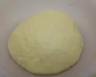

Agregar a la leche tibia, la levadura, dos cucharadas de harina y una cucharada de azúcar. Sacamos todo de los mismos ingredientes. Removerlo y dejar unos minutos hasta que se active la levadura.
En un bol colocar la harina y añadir en el centro el resto del azúcar,y la levadura activada con la leche tibia, espolvorear la sal por los extremos para que no se mezcle directamente con la levadura. Añadir los huevos e integrar todos los ingredientes.
Amasar por unos minutos, luego agregar la manteca, amasar y golpear la masa sobre la mesada hasta que la manteca se integre por completo y la masa vuelva a tomar cuerpo (no añadir harina).
Bollar y dejar leudar hasta duplicar su volúmen, pintar con aceite la masa para que no se reseque y tapar con un repasador o con papel film. Dejar en un lugar cálido.
Una vez duplicada el volumen de la masa, degasificar y estirar con un palote dejando una altura de 1 cm. Aproximadamente.
Con un cortante para donas, o con un vaso y otro cortante redondo mas pequeño hacer el orificio del centro.
Formar las donas y ubicarlos en una bandeja con papel manteca separadas entre sí, dejar leudar nuevamente hasta que doble su volúmen.
Freír las donas por ambos lados en abundante aceite a una temperatura de 160 grados. Decorar a gusto, puede ser con azúcar, chocolate,granas de colores,glasé de azúcar glas o también puedes rellenarlo con dulce de leche o crema pastelera.